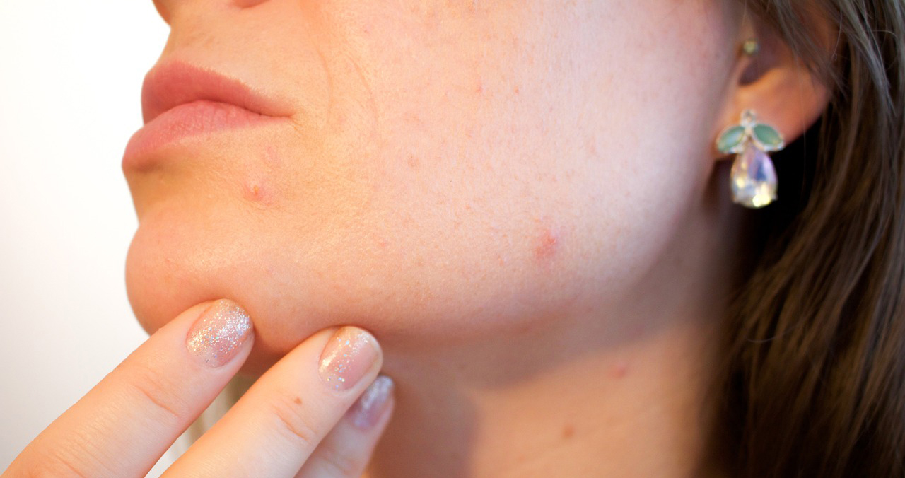

Kenalan dengan Acne Conglobata, Jerawat Parah yang Langka
Jerawat
Ditinjau oleh dr. Rizal Fadli 25 Mei 2023
“Acne conglobata merupakan kasus jerawat parah yang langka, yang ditandai dengan munculnya nodul, jerawat, dan papula pada permukaan kulit. Untuk mengobatinya harus dengan bantuan dokter kulit.”

VitaCare, Jakarta – Acne conglobata (AC) terjadi ketika kista
dan nodul jerawat mulai tumbuh secara bersamaan jauh dari bawah
kulit. Kondisi Ini adalah bentuk jerawat nodulocystic yaitu
peradangan kulit yang langka tetapi serius. Nodul akan tumbuh sangat
besar dan sering kali berbentuk kubah.
Sementara itu, biasanya jerawat sering mengeluarkan nanah yang
berbau tidak sedap. Seiring waktu jerawat ini bisa menyebabkan
jaringan parut yang signifikan dan terkadang meninggalkan noda yang
gelap.
Meski terdengar menyeramkan, masalah kulit ini bisa teratasi dengan
perawatan medis yang tepat. Nah, berikut penyebab dan cara mengatasi
acne conglobata
Berbagai Penyebab Acne Conglobata
Acne conglobata sering kali dimulai dari jerawat vulgaris yang perlahan memburuk. Kadang-kadang AC juga bisa muncul secara tiba-tiba, setelah jerawat sebelumnya sudah sembuh. Akan tetapi, belum diketahui secara pasti penyebab perkembangan jerawat conglobata. Berikut ini beberapa kemungkinan penyebabnya:
1. Tubuh yang hipersensitif
Acne conglobata kemungkinan terjadi ketika tubuh secara tiba-tiba menjadi hipersensitif terhadap propionibacteria acnes, yaitu bakteri penyebab utama jerawat. Ketika bakteri ini mengubah reaktivitasnya sebagai antigen, tubuh bereaksi berlebihan, sehingga menyebabkan peradangan parah dan perkembangan jerawat.
2. Penggunaan steroid anabolik
Penggunaan steroid anabolik sering menjadi salah satu pemicu terbesar jerawat conglobata. Kondisi ini biasanya terjadi di kalangan binaragawan.
3. Faktor genetik
Ada kemungkinan jerawat jenis ini bisa diturunkan dalam keluarga. Sebab pada dasarnya jerawat biasa bisa terjadi karena faktor keturunan, apalagi jerawat yang parah. Dalam beberapa kasus, kondisi ini dapat terjadi gangguan auto-inflamasi, yaitu jenis kelainan yang bersifat genetik.
Gejala Acne Conglobata
Acne conglobata umumnya terjadi di area punggung, dada, bahu, paha, bokong, serta wajah. Berikut ini beberapa gejalanya:
- Abses yang dalam.
- Kerak berdarah
- Peradangan dan pembengkakan.
- Komedo yang muncul lebih dari satu dan meradang, sehingga menyebabkan munculnya nodul.